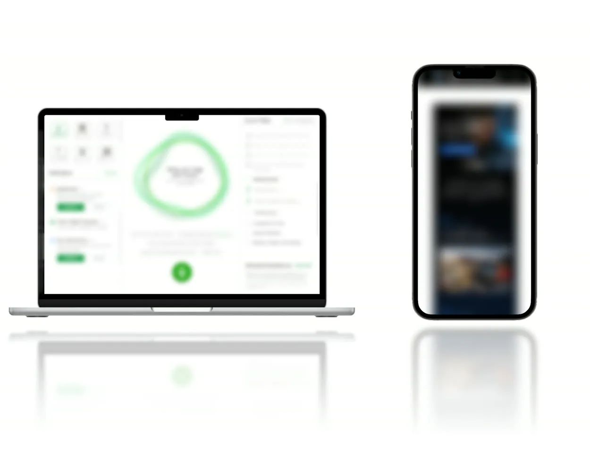
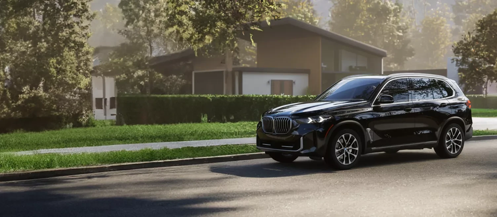
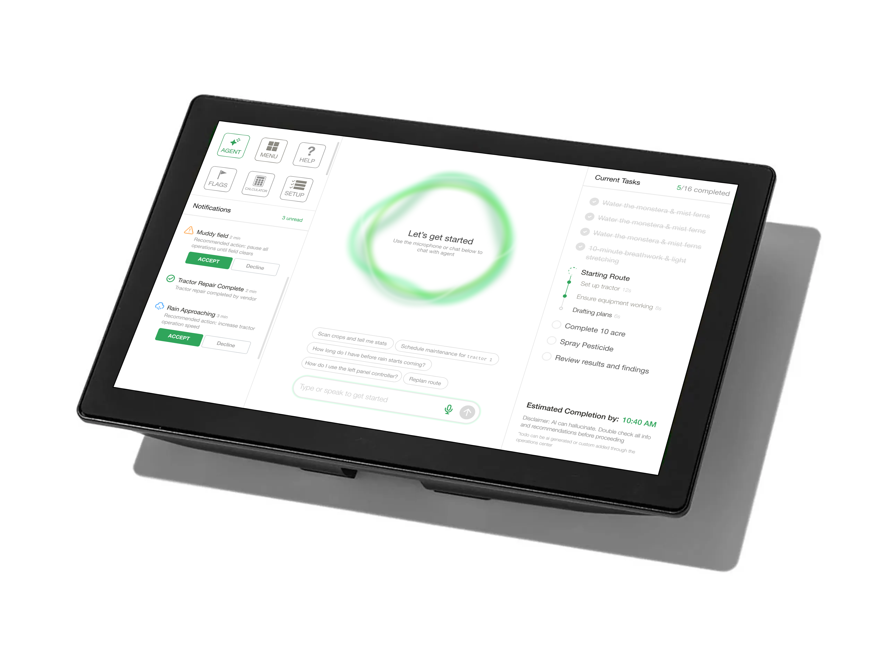
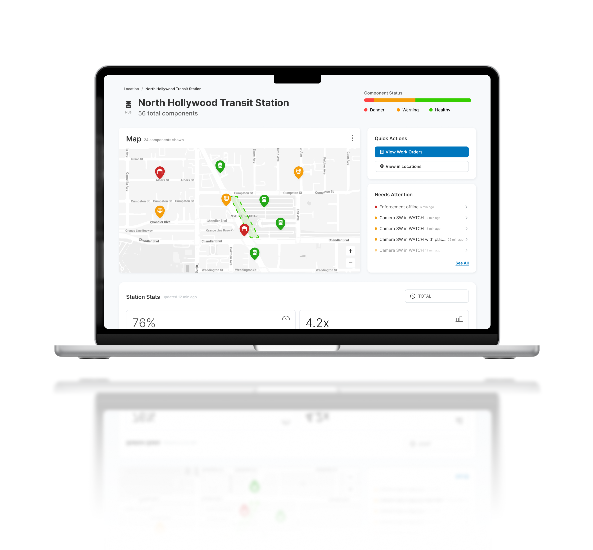
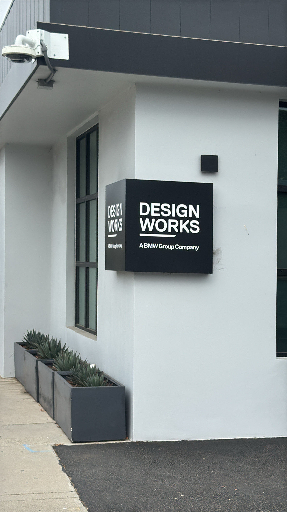
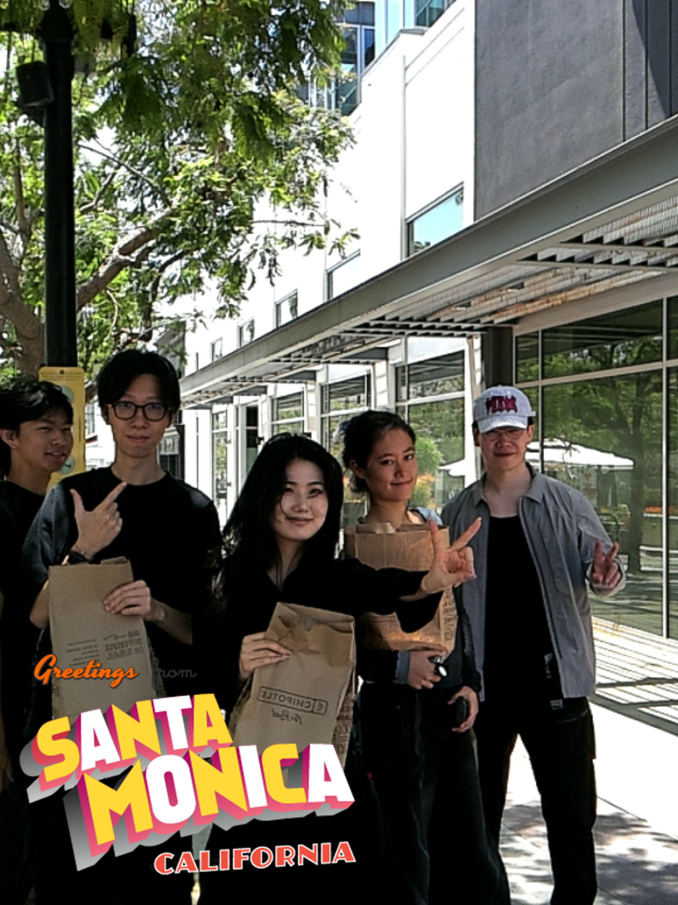
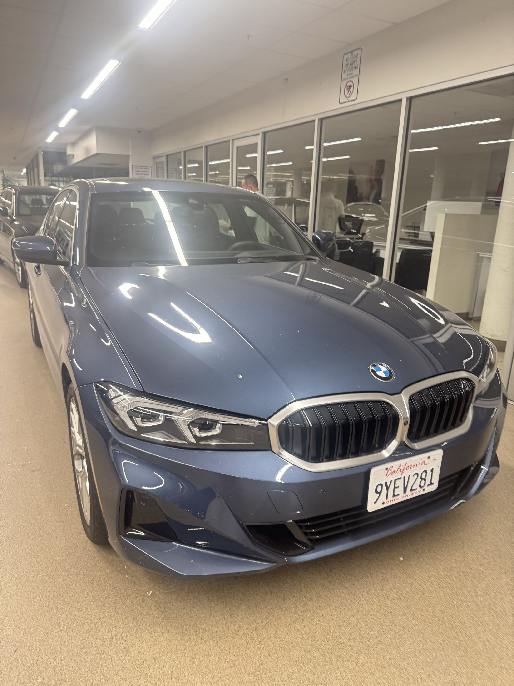

BMW Designworks
Interaction Design internship at the Los Angeles studio.
The role
I spent the summer on the Interactions team, working across branded web experiences for BMW Group brands and 2 external client projects.
Some of the work has already shipped and is still in development. A public version is expected by the end of the year, and I'll share it here when it wraps.
Three brands
Adapting one platform so BMW, MINI, and Motorrad still feel like themselves.
Alongside updates to an existing BMW platform, I owned the design differentiation for MINI and Motorrad. That meant researching each brand's imagery and visual language, then designing brand-specific versions of modules the three sites share. This is a piece publishing by the end of 2026. I'll update this page when it is live.

“Her work balanced the constraints of a shared platform with the distinct identity and character of each brand, helping create experiences that remained both consistent and authentic.”
Two projects
A conceptual exploration, and a pitch for a client.
These are two different projects, shown with the branding removed. The conceptual one was about bringing AI into an established industry, designing for unconventional surfaces, and thinking about how it could be more a part of everyday life. On the client pitch, I owned five end-to-end flows from concept through the presentation. I'd be happy to dive into either in more detail, so feel free to schedule a call.
“Through user journey development, interaction design, and visual refinement, Jennifer helped identify opportunities to improve both the functionality and overall usability of the platform.”


Los Angeles
A lovely summer spent in Santa Monica.
Outside of work, I met a lot of really cool people working also in diverse fields. I also took many runs along the Santa Monica Pier, which had a splendid view during sunset. Also got to drive around in a BMW, which has always been and will continue to be my favorite car :)))



Reflection
I met some of the most lovely, most amazing people there. I learned so much from just being surrounded by my team and by everybody, by the amazing people and very talented designers that I can surround myself with. Every day, I'm grateful for the opportunity to be able to work on such a diverse portfolio of projects that I'm around to, and lucky to be able to receive so much ownership.
Thanks for reading!
Want to learn more? Curious about the details? Feel free to reach out to me at